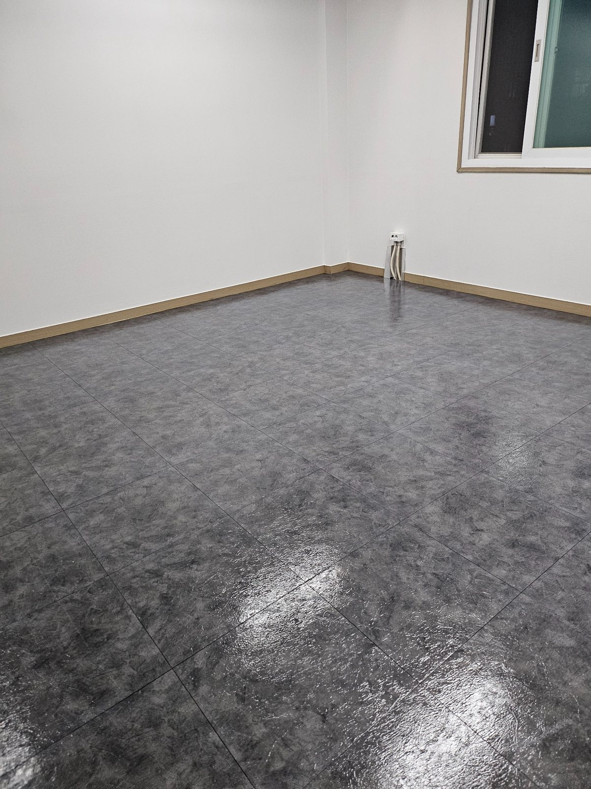
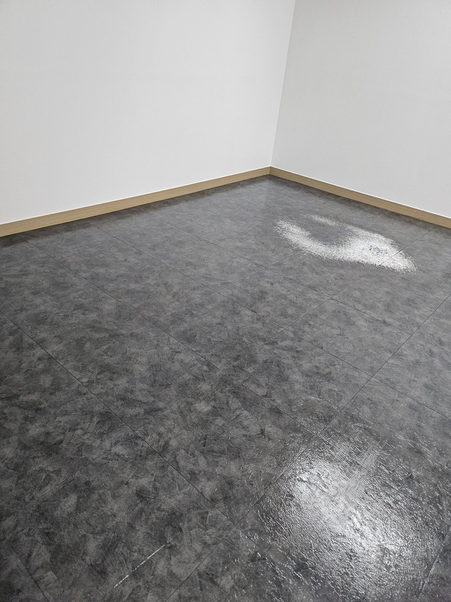
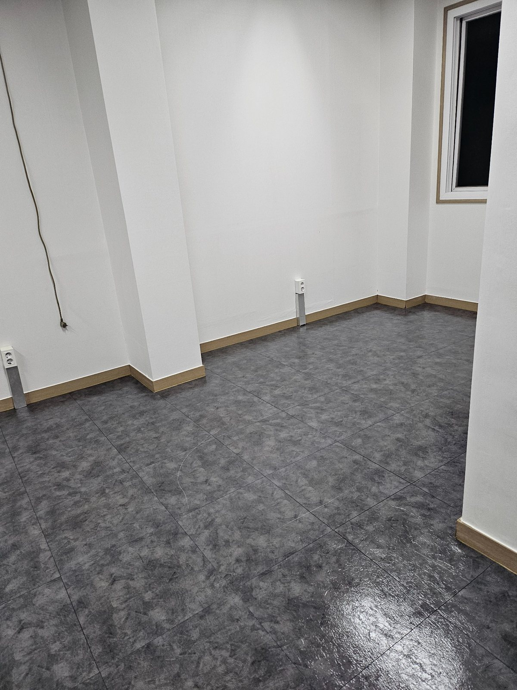
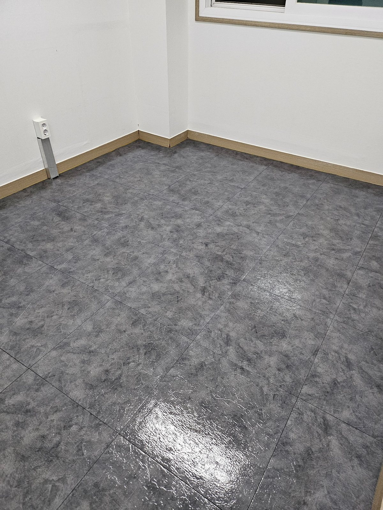
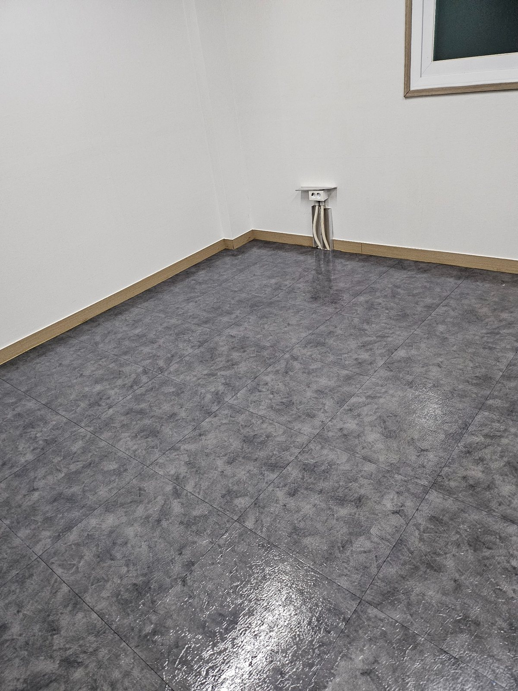
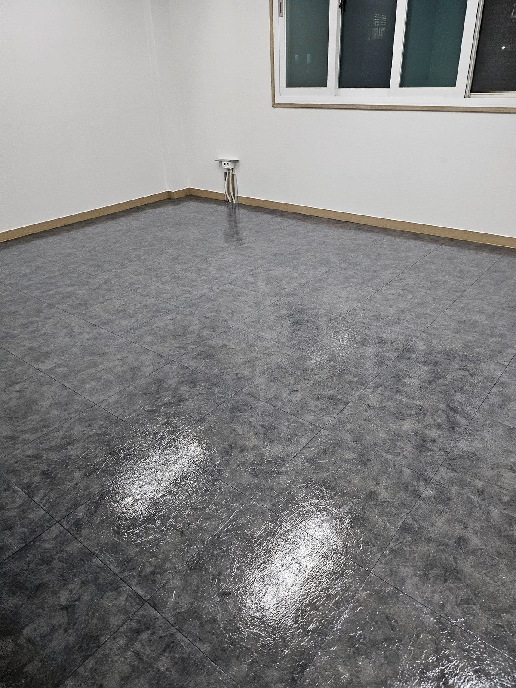
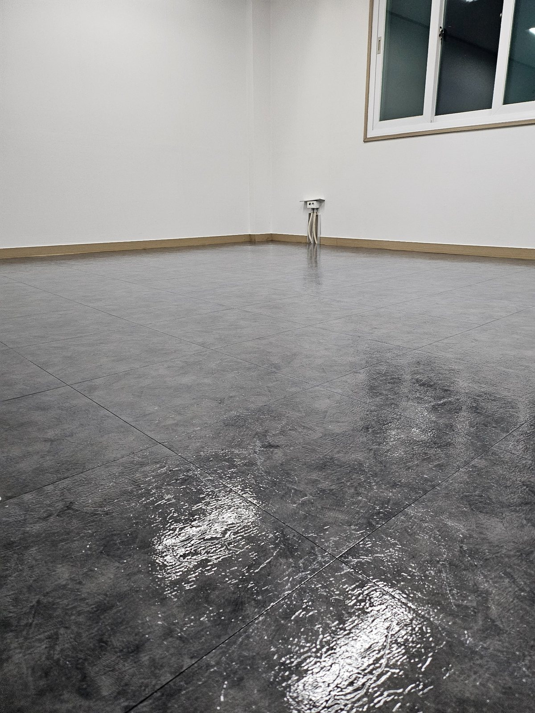
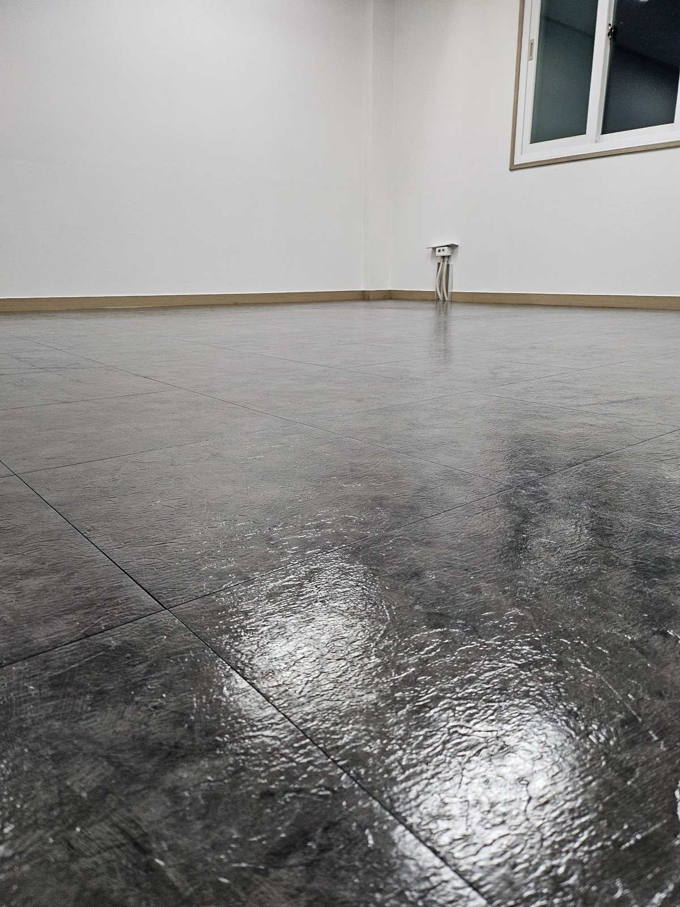
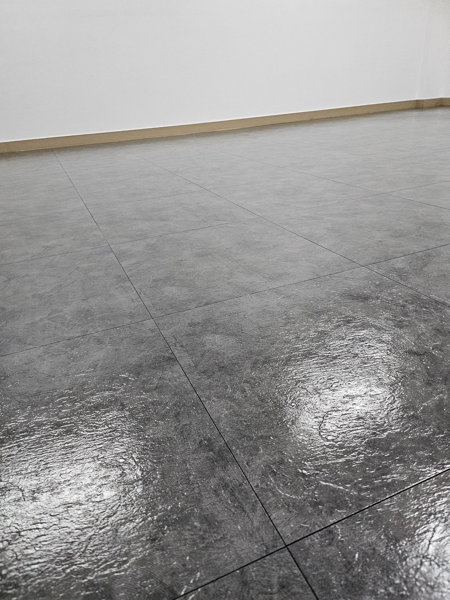
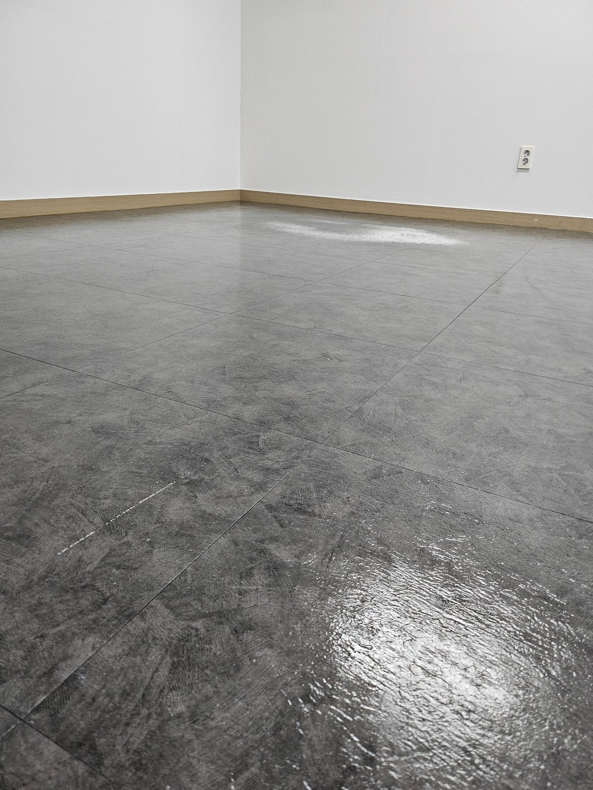

김해 공단 사무실 바닥청소 | 바닥 집중관리 작업사례
김해 공단 사업장에서 자주 문의하는 사무실 바닥청소를 기준으로 구성한 작업사례입니다. 넓은 사무공간은 집기 이동 후 바닥 전체 상태를 한눈에 확인할 수 있기 때문에 모서리, 벽면, 중앙 통로까지 구역을 나눠 관리하는 것이 중요합니다.

사무실 전체 바닥 마감 상태
비어 있는 사무공간은 바닥 전체 상태를 확인하기 좋은 환경입니다. 벽면에서 중앙부까지 오염이 남은 곳이 없는지 확인하고, 넓은 면이 한쪽만 번들거리거나 얼룩져 보이지 않도록 전체 균형을 보면서 마무리합니다.

모서리와 벽면 주변까지 확인
사무실 바닥청소에서 중앙부만 관리하면 모서리와 걸레받이 주변의 잔여 먼지가 눈에 띌 수 있습니다. 벽면 가장자리와 전선 인입부 주변까지 확인해 작업 후 공간 전체가 고르게 정돈돼 보이도록 관리합니다.

넓은 바닥면의 균일한 정리
가구가 빠진 상태에서는 기존에 집기 아래에 가려져 있던 먼지와 생활오염을 함께 확인할 수 있습니다. 바닥 전체를 구역별로 나눠 정리하고 표면 상태가 일정하게 보이는지 다시 확인합니다.

창가와 코너 구역 관리
창가 쪽은 외부 먼지 유입과 결로, 미세먼지 영향으로 바닥 가장자리가 쉽게 오염될 수 있습니다. 창 아래와 벽면 코너까지 세밀하게 확인하면서 청소 범위를 넓혀 관리합니다.

바닥 광택과 표면 상태 확인
청소 후 바닥은 조명과 창문 빛이 비치면서 표면 상태가 더 선명하게 보입니다. 얼룩이나 잔여 세정 흔적이 없는지 여러 방향에서 확인해 마감 품질을 점검합니다.

사무실 내부 전체 마무리
사무공간 전체를 한 번 더 둘러보며 바닥선, 벽면 하단, 코너부를 확인합니다. 가구가 다시 들어오기 전 상태에서 마무리 점검을 하면 이후 정리와 입주가 훨씬 수월합니다.

낮은 각도에서 바닥 상태 확인
낮은 각도에서는 바닥 표면에 남은 흔적이나 얼룩이 더 쉽게 보일 수 있습니다. 작업이 끝난 뒤 시선 높이를 바꿔 확인하면서 중앙부와 가장자리의 차이를 점검합니다.

넓은 공간 바닥청소 결과
넓은 사무실은 작은 얼룩도 반복되면 전체적으로 지저분해 보일 수 있습니다. 면적이 넓을수록 구역별 작업 순서를 정해 관리하고 마지막에 전체 상태를 다시 확인하는 것이 중요합니다.

사무실 바닥 최종 확인
전체 바닥이 정리된 뒤에는 출입구에서 안쪽까지 시야를 넓게 두고 확인합니다. 청소 흔적이 한쪽에 집중되지 않았는지 살펴보고 다음 작업이나 가구 배치를 진행할 수 있도록 마무리합니다.

공간 전체 청결감 마무리
바닥이 정돈되면 흰 벽과 어두운 바닥의 대비가 선명해져 공간 전체가 훨씬 깔끔하게 보입니다. 사업장 청소는 한 부분보다 전체 인상을 좌우하는 바닥 관리가 특히 중요합니다.